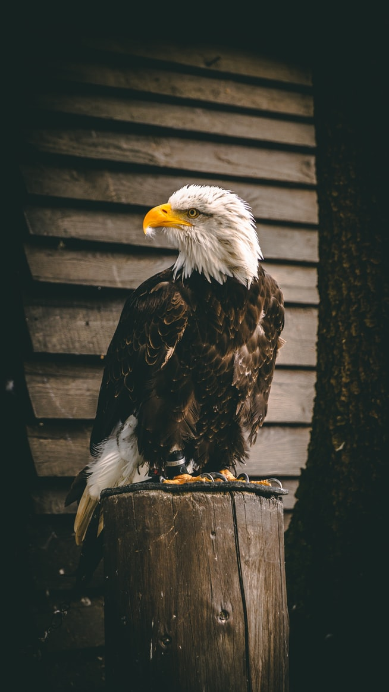

El águila calva, conocida por su cola y cabeza de plumas blancas (que no calva),
es la orgullosa ave símbolo nacional de Estados Unidos, aunque estuvo al borde de
la extinción en ese país. Durante muchas décadas, las águilas calvas fueron cazadas
por deporte y para «proteger» las zonas de pesca. Los pesticidas como el DDT también
causaron estragos entre las águilas y otras aves. Estos productos químicos se depositan
en los peces, que forman la mayor parte de la dieta del águila.

Debilitan los cascarones
de sus huevos y limitan gravemente su capacidad para reproducirse. Desde la severa
restricción del uso de DDT en 1972, la población de águilas ha resurgido notablemente,
a lo que también han contribuido los programas de reintroducción. El resultado es un triunfo
de la vida silvestre. El Servicio de Pesca y Vida Silvestre de Estados Unidos ha recalificado
su situación, que ha pasado de especie en peligro a amenazada.
Aunque su población ha crecido en gran parte de su territorio,
las águilas calvas siguen siendo más abundantes en Alaska y Canadá.
Estas poderosas aves rapaces usan los talones para pescar, aunque muchas
veces se alimentan de carroña o robando las presas de otros animales.
(Esta conducta ladrona motivó la memorable oposición de Ben Franklin
a la designación del ave como símbolo nacional de Estados Unidos.)
Viven cerca del agua, especialmente en costas y lagos, donde la pesca es
abundante, aunque también cazan y comen pequeños mamíferos.
Se cree que las águilas calvas se emparejan de por vida. La pareja construye en lo alto
un enorme nido de palos, que se encuentra entre los más grandes de todas las aves. Suelen
poner dos huevos al año. Los aguiluchos son oscuros y hasta más o menos los cinco años de
edad no presentan las características marcas blancas que distinguen tan claramente a sus progenitores.
Las águilas jóvenes recorren grandes distancias. Se han avistado aves de Florida en Míchigan, y se sabe
que águilas de California han volado hasta Alaska.